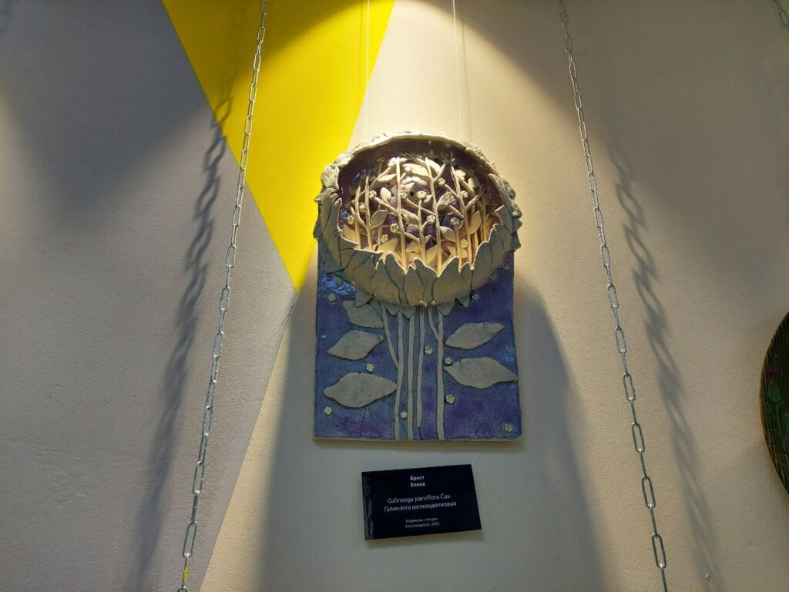
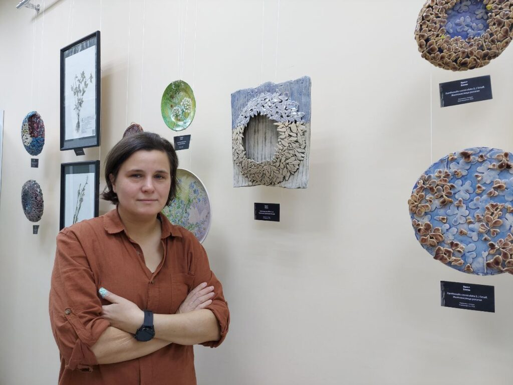
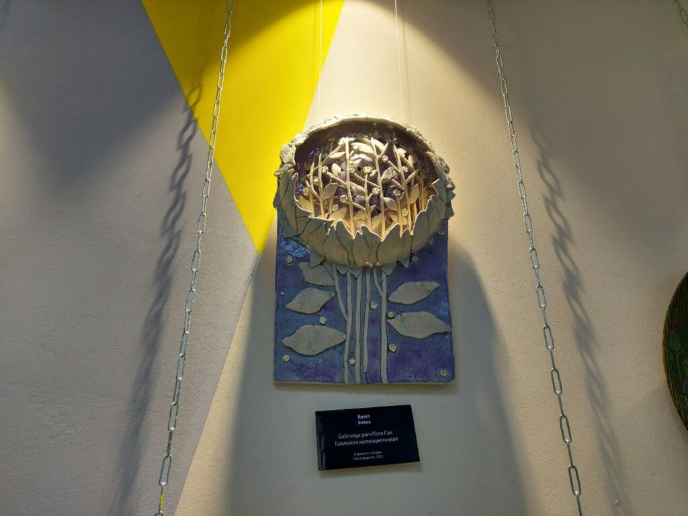
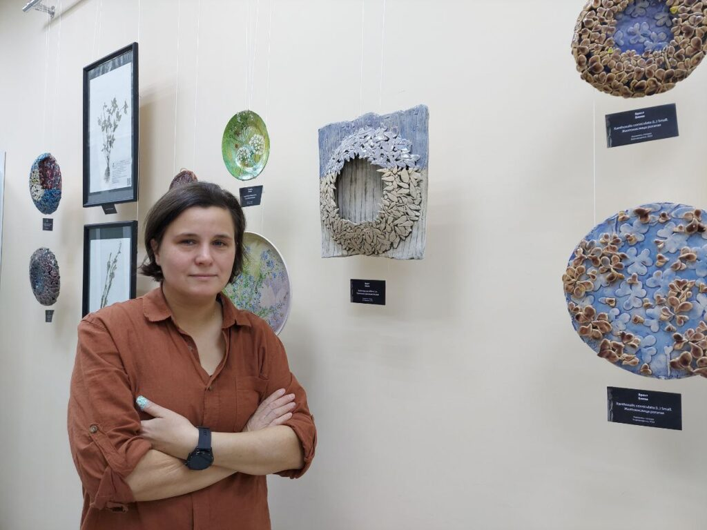

В четверг, 27 октября, в модельной библиотеке имени Бориса Машука в областном центре открылась необычная научно-художественная выставка «AMUROBOTANIKUS. Чёрная книга». Уникальная экспозиция знакомит гостей с инвазионными растениями Амурской области через работы амурских художников и гербарии.
🛈 Справочно. Инвазионными (или инвазивными) видами растений называют чужеродные виды, которые попали на новую территорию и начали активно размножаться, вытесняя местные виды. Многие из растений-захватчиков наносят вред здоровью людей, окружающей природе и видовому разнообразию растительного мира.
Коллаборация науки и искусства
Кураторами столь интересного проекта выступили союз художников России и Амурский филиал Ботанического сада-института ДВО РАН. Экспонаты выставки выполнены из натуральных материалов (дерево, глина) и изображают инвазионные растения Амурской области. Кроме художественных экспонатов, на выставке представлены образцы из гербария Ботанического сада. В проекте приняли участие: Елена Сотникова, Наталья Керницкая, Елена Сачава, Сергей Клещëв, Татьяна Ананьева, Татьяна Аверина, Ирина Бочкарёва, Ольга Николайчук, Елена Брест. Ну, а полный список инвазионных растений представлен в издании «Чёрная книга флоры Дальнего Востока», которое презентовали гостям на открытии выставки.
 



— Это уже второй проект, который мы сделали совместно с Ботаническим садом, – говорит художник, автор представленных работ Елена Брест. – Первый был по Красной книге, по редким, уникальным растениям Амурской области. И всем как-то понравилось. Ведь растения – это материал, который вот он, рядом. Это даёт столько возможности, от росписи до скульптурных элементов. Потом узнали, что ещё есть Чёрная книга. Каждый автор, участник проекта взял какое-то растение и изобразил его в глине либо дереве.
Чужие здесь живут
Подробнее о «Чёрной книге флоры Дальнего Востока» рассказала один из её авторов-составителей, научный сотрудник лаборатории ботаники и защиты растений Амурского филиала Ботанического сада-института ДВО РАН Галина Дарман.
— Над книгой работали 16 авторов со всего Дальнего Востока. В книге обобщены все 117 видов инвазионных растений, которые заполняют дальневосточную территорию. В Амурской области есть 90 % растений из этого списка. А по числу инвазионных растений Приамурье занимает четвёртое место на Дальнем Востоке. Основной вектор распространения инвазий в регионе — шоссейные и железные дороги, которыми распространяются 96 % видов чужеродных растений, — отметила Галина Фёдоровна.
В качестве примера автор привела Моховую Падь, где находится просто кладезь «злых» растений. А в жилом массиве областного центра растёт похожая на полынь амброзия, вызывающая сильную аллергию. «Познакомиться» с ней можно на улице Северной. Остальной список также знаком горожанам: череда лиственная, топинамбур, борщевик и множество других. Одни виды инвазий распространяются на садовых участках, другие селятся вдоль дорог, третьи — в городах возле домов. Многие очень красиво цветут, но от этого не становятся менее опасными.
О проекте – с юмором
— Эта выставка возникла совершенно случайно, из моего любопытства, – говорит ведущий библиотекарь библиотеки-обсерватории имени Б. Машука Марина Шелихан. – Она, конечно, должна была быть, это такой труд! Я смотрела, как Елена Брест создавала работы (а вы увидите их, там мельчайшие лепесточки) и называла типа: «Катька-зараза», «Галка-заноза». Я сказала, что нам пора с читателями к ней на экскурсию опять прийти, посмотреть, что там за заразы. А она ответила: «Зачем на экскурсию? Надо делать выставку». И теперь все эти «заразы» здесь, в нашей библиотеке. Их можно посмотреть, задать вопросы авторам, попить чай или кофе. Организаторы проекта приглашают амурчан на выставку в модельной библиотеке-обсерватории имени Бориса Машука, которая продлится целый месяц, до конца ноября.
Пришли и выжили аборигенов
Анна Воробьёва, кандидат биологических наук, заведующая лабораторией интродукции Амурского филиала Ботанического сада-института ДВО РАН рассказывает о том, чем конкретно могут навредить инвазии.
— Инвазионные растения, которые занесены в списки Чёрной книги, являются потенциально опасными. Когда я была на стажировке, нам приводили пример. В одном из американских штатов растёт плющ обыкновенный. Он заполонил все лесные и парковые пространства таким образом, что нижний ярус в лесу не имеет никакого травяного покрова кроме одного-единственного этого растения. Этот покров такой плотный, что все семена, которые падают, не всходят. А когда на этом месте деревья умирают, то нового ничего не появляется. Образуются пустоши, покрытые только этим плющом. То есть пришёл вид, который не позволяет расти местным, аборигенным растениям, — отметила эксперт.
По словам Анны Воробьёвой, к счастью, у нас в Амурской области пока таких страшных видов инвазий нет. Но есть порядка десяти видов, которые распространяются очень сильно и занимают большие площади: один вид, пришедший из другого региона, может занять целое поле и вытеснить местные растения. Это страшно для сельхозугодий в первую очередь. — Другой вред от инвазий — аллергия, — продолжает Анна Николаевна. — Амброзия — полинозное растение — родственник полыни. Такие растения имеют большой семенной фонд, распространяются быстро, занимая, в основном, пастбищные пространства. А животные есть это растение не могут, оно очень горькое. Также к полинозным относится и циклахена. Есть ещё повилика — полупаразит, который не имеет собственной корневой системы, внедряется в растение-хозяина и высасывает его соки. Может полностью оплести другие растения на садовых участках. Растение-хозяин высыхает, а повилика размножается. Но, несмотря на весь вред от этих растений, тематические работы амурских художников необыкновенны по форме и содержанию, по-настоящему яркие и красивые, ведь в каждую вложена частичка души мастера.